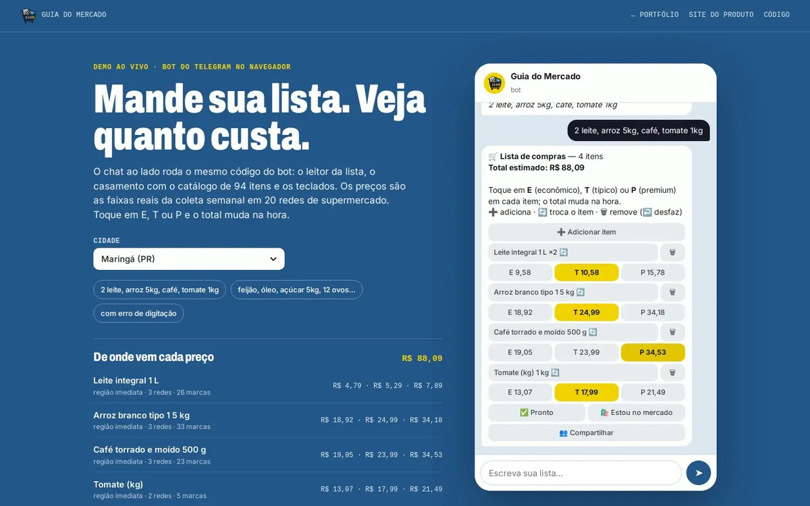

01 Bot de Telegram · no ar em piloto
Guia do Mercado
Você manda a lista de compras numa mensagem e o bot devolve o preço econômico, típico e premium de cada item nos mercados da sua região. A lista é compartilhada: quem está no mercado marca o que pegou e o total se atualiza.
- 508
- regiões do IBGE com preço
- 316 mil
- preços por coleta semanal
- 20
- redes de supermercado
PythonTypeScriptgrammYPostgreSQLpg_cronSupabase

Clique para testar